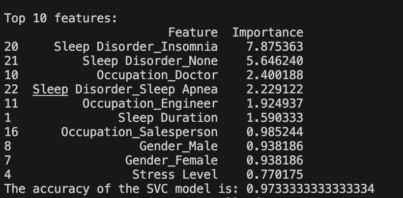
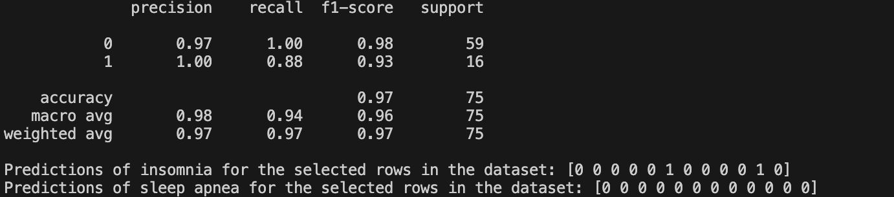

SVC MODEL

Here we can see our features, which are characteristics that can be measured and can impact the output, and the importance is a numerical value dictating the weight that each feature has.
We also received an accuracy score, which tells us how closely it matches with the output of the sample data

Here we see the output of the SVC model, and we are given four different values, precision, recall, f1-score, and support.
The precision value tells us how close the prediciton made by the model was.
The recall value is the precentage of the data samples that the model identifies as belonging to the right feature.
The f1-score is a metric that measures the accruacy of the model based on the precision and recall values
The support values tell us that number of occurances of a feature in the specified dataset.